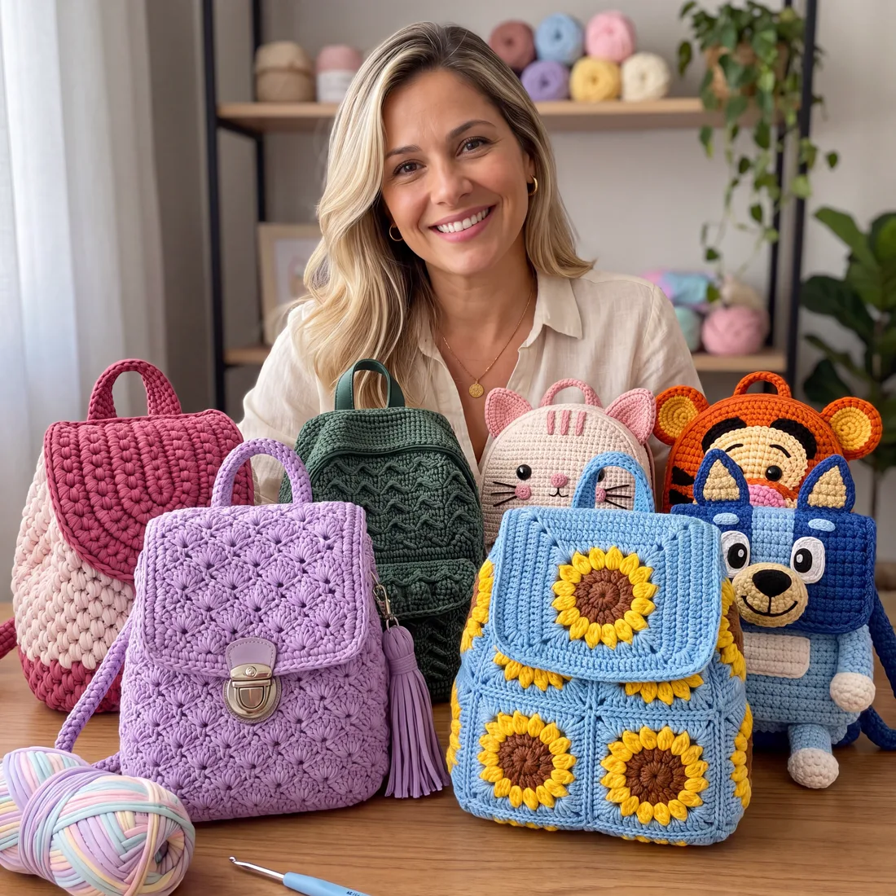

Página 1
A ficha da mochila
Você vê a mochila pronta e já sabe tudo o que comprar antes de começar.
Receitas completas com materiais, pontos e passo a passo fotografado para você fazer sua própria mochila de crochê do zero, com acabamento de loja.

Não é falta de jeito. É que quase tudo que se acha por aí sobre mochila de crochê é foto bonita sem receita nenhuma.
Você salva o modelo, volta nele depois e continua sem saber qual fio, qual agulha e quantos pontos. A imagem mostra o resultado, nunca o caminho.
Fazer um retângulo até dá. Unir corpo, base, tampa e alças sem a mochila ficar torta é onde quase todo mundo trava sozinha.
Você compra o fio no palpite, gasta o material e a mochila sai mole, pequena ou deformada — longe do que te encantou.
Parece coisa de artesã experiente, mas mochila de crochê é uma soma de peças simples. Quem faz não tem dom — tem a receita na mão.
São 50 mochilas para usar, presentear ou vender — dos modelos adultos aos bichinhos infantis. Arraste para o lado e veja como cada receita é entregue.
Nada de foto solta sem explicação. Da lista de materiais ao último arremate, tudo o que você precisa para fazer aquela mochila.
Você vê a mochila pronta e já sabe tudo o que comprar antes de começar.
Cada parte da mochila com fotos numeradas, do primeiro ponto ao acabamento.
Como juntar tudo sem a mochila ficar torta, até o último detalhe.
E poder responder: fui eu que fiz. Esse é o momento que faz valer cada carreira.
Uma mochila infantil sai, em média, por R$ 40 de material. Veja o que se cobra hoje por mochilas como as desta coleção — e quantas pessoas já compraram.
Veja com seus próprios olhos ↓
Anúncios da Shopee em setembro de 2026. O preço de venda depende do acabamento, das fotos e da divulgação de cada artesã.
O que separa a mochila que parece caseira da que parece comprada — e o que fazer quando você quiser vender.
Conversas de quem recebeu o material e mandou foto da mochila pronta.
Pagamento único. Sem mensalidade, sem pegadinha.
Só as receitas, sem os bônus.
↓ tem uma opção melhor logo abaixo
As 50 receitas + os 5 bônus.
Leve a Coleção Completa com os 5 bônus por um valor que não aparece em nenhum outro lugar do site.
Baixe, escolha uma receita e comece. Se em 7 dias você achar que não era para você, é só me mandar um e-mail e eu devolvo cada centavo. Sem perguntas, sem burocracia, sem precisar justificar.
Consegue. Cada receita começa pela ficha com o nível, a agulha e o tempo de execução, então você escolhe um modelo à sua altura para a primeira peça. Todas mostram as peças separadas e o passo a passo fotografado em quadros numerados, e a página de montagem ensina a juntar tudo sem a mochila ficar torta.
Vale, e você vai andar rápido. Os pontos são os que você já conhece — correntinha, ponto baixo, meio ponto alto. O que muda é a estrutura: base firme, laterais, tampa, alças e ferragens. É exatamente essa parte que as receitas destrincham.
É digital. Assim que o pagamento é aprovado, o link chega no seu e-mail — em geral em menos de 2 minutos. Você baixa quantas vezes quiser e o acesso não expira.
Não. As páginas são em A4 e ficam boas impressas, mas dá para seguir tudo pelo celular ou tablet, ampliando a foto do passo com os dedos. Muita gente prefere assim, porque não gasta tinta.
A maioria dos modelos usa fio de malha, agulha de crochê entre 4 mm e 7 mm, marcador de pontos, agulha de tapeçaria e as ferragens da mochila (fecho, zíper ou reguladores). Cada receita lista o que aquele modelo específico pede, com as cores e as quantidades, e o bônus Guia de Fios e Compras ajuda a escolher o fio certo sem desperdiçar.
Pode, sim, e é para isso que existe o bônus de precificação. O que você não pode é revender ou distribuir os arquivos das receitas — o material é para seu uso. As peças que saem das suas mãos são suas.
Você tem 7 dias para pedir o reembolso integral, por e-mail, sem precisar explicar o motivo. O risco é meu.
A primeira pode sair ainda esta semana. E o próximo elogio que você ouvir vai ter uma resposta nova: fui eu que fiz.
Dúvidas antes de comprar? Fale com a gente pelo e-mail do rodapé.